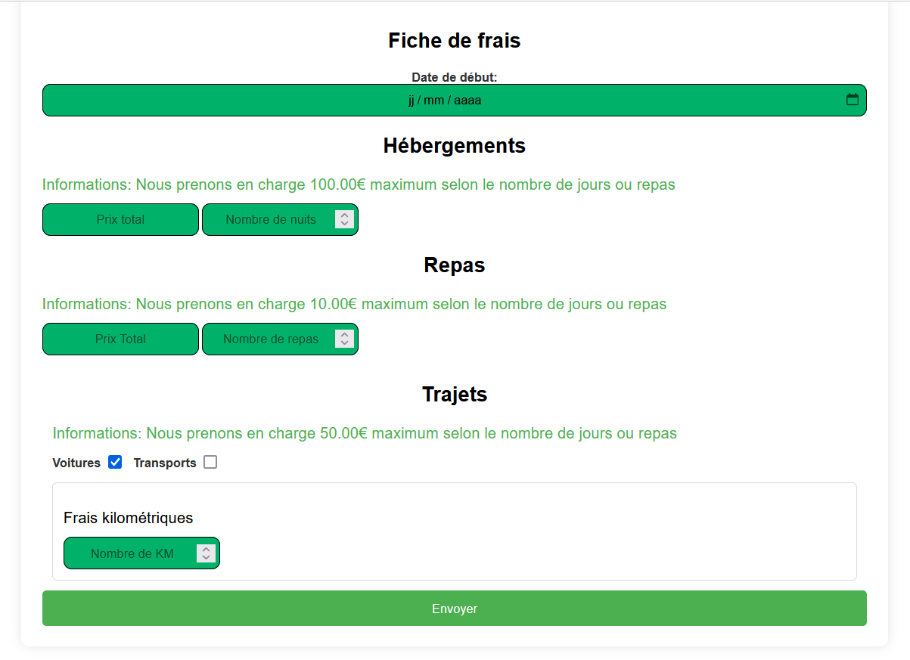
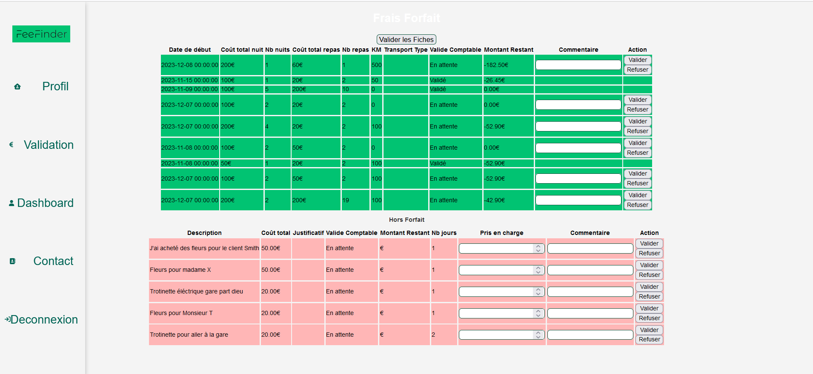
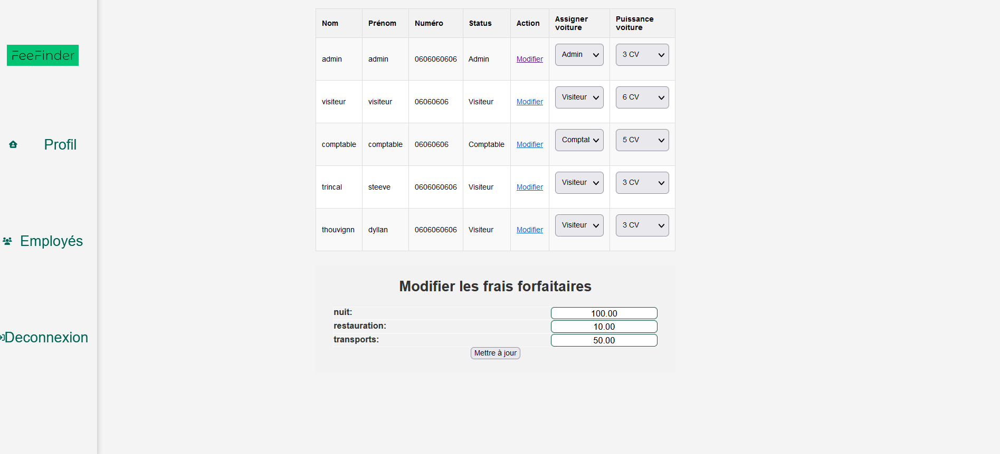
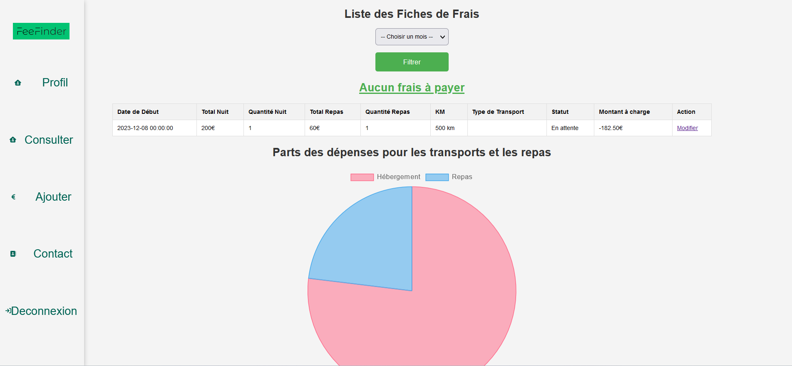

Notre plateforme permet aux visiteurs de créer facilement des fiches de frais. Grâce à une interface utilisateur intuitive, les utilisateurs peuvent saisir et soumettre leurs dépenses sans complication.
L'interface comptable dédiée facilite la vérification et la validation des fiches de frais soumises par les visiteurs. Cette fonctionnalité assure un contrôle efficace et une gestion des dépenses transparente.
L'interface d'administration offre des outils puissants pour gérer les rôles des utilisateurs, ajuster la puissance de leur véhicule, et accéder aux comptes utilisateurs. Ces options renforcent la flexibilité et la personnalisation de la gestion des frais.
Les frais sont calculés de manière dynamique, offrant une précision et une efficacité accrues. L'utilisation de graphiques pour l'analyse des données permet une visualisation claire des dépenses et des tendances.

Les filtres de dates intégrés permettent de trier les fiches de frais en fonction de la période souhaitée, offrant une flexibilité et une facilité d'utilisation accrues pour les utilisateurs et les comptables.
